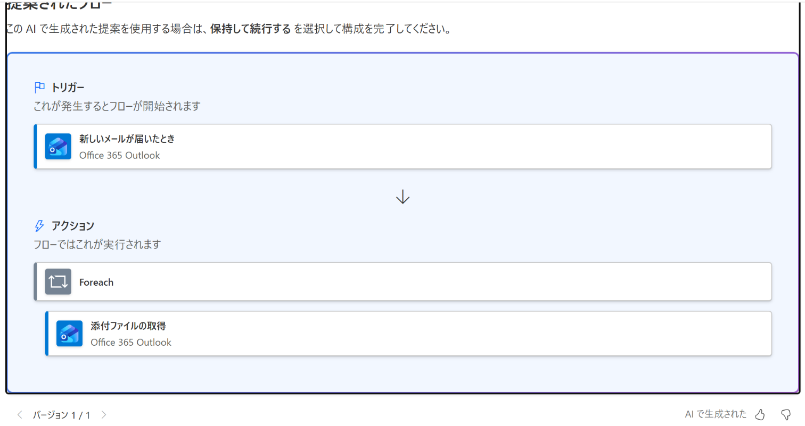
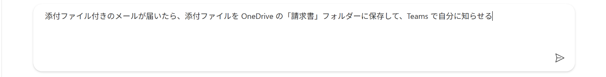

Vol.149-3
実際の Copilot の提案：骨組みまで

PA45 Demo 環境で、1枚目の文をそのまま入れた結果です。
トリガーと繰り返しは出ましたが、OneDrive への保存と Teams への通知は提案に入りませんでした
トリガーと繰り返しは出ましたが、OneDrive への保存と Teams への通知は提案に入りませんでした
提案されたフロー実画面

2
3
2
トリガーは新しいメールが届いたとき
3
Foreach の中に添付ファイルの取得。保存と通知はここには無い
記述して作成する（ステップ 1/2）実画面

1
1
1枚目の文をそのまま入力して送る
→
提案の下の保持して続行するを押すと、接続の確認（ステップ 2/2）に進む
→
接続は Office 365 Outlook だけに緑のチェック。OneDrive と Teams は出てこなかった
→
フローを作成でデザイナーが開き、ここから手で足す
向いている人フローを作ったことがない人どのトリガーを使うか迷う人社内で自動化を広める担当
出典：Microsoft Learn